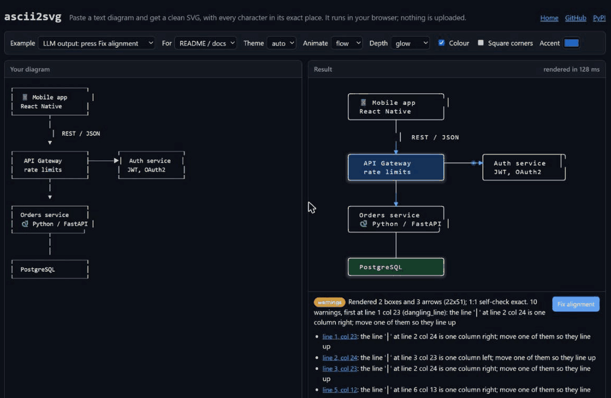

ascii2svg

Your text diagrams, drawn properly. Every character stays exactly where you put it.

Try it in your browser →Paste a diagram, pick a look, fold a tree, download SVG, PNG or a page. Nothing is uploaded.
Read the guide →How to draw diagrams that render well, pick a look, and fix what's off, in plain language.
Scroll demo →A 72-row architecture diagram that draws itself as you scroll.
Get the Claude skill ↓Upload to Claude, then just ask it to render your diagram.
Source & docs →One Python file, no dependencies, 1:1 self-check on every run.
Watch it work
A messy diagram of the kind a model draws, fixed with one click, a diagram typed live, then a tour: flows into decision trees, a pivot table, swimlanes, and a Mermaid-style gallery. All of it runs in the browser.

Trees and mind maps that fold
Call trees, file trees, npm ls / cargo tree output and mind maps drawn with
├── and ╰── become an SVG whose branches fold. No JSON, no special syntax: the text
you already have. Click a node below to fold its branch; Shift+click folds everything under it.
Drawn from 29 lines of plain text. Also try a call tree that opens folded, or tick Fold in the playground with your own tree.
{kind=link}
tree src | ascii2svg - -o src.svg --preset explore # a colour per branch, branches fold cargo tree | ascii2svg - -o deps.svg --preset explore --fold 1 # open with only the top level showing
Type this…
+------------+ +------------+ +------------+ +-------------+
| Idea |---->| Draft |---->| Review |---->| Publish |
+------------+ +------------+ +-----+------+ +-------------+
^ |
| |
+------------------+
needs changes
…get this

python3 scripts/ascii2svg.py workflow.txt -o workflow.svg --color --theme auto --animate